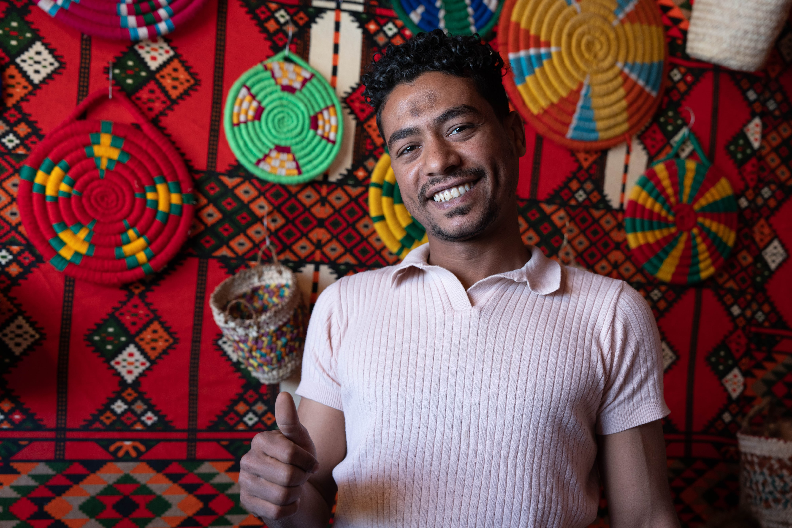

Photographs · Cello · Places
Zoe
Wacker
“I love discovering new places, digging into history, and snapping photos that tell little stories.”Menlo Park, California
Selected photographs
Full portfolio →





Around the site
-
 →
→About
My highlight reel of experiments, adventures, and “aha!” moments.
-
 →
→Travel
Egypt & Chile 2025 · London & Rome 2024 · Paris 2023
-
 →
→Photography
Portfolio, awards, and exhibitions.
-
 →
→Music
“Music makes everything in my day feel more colorful.” Cello, orchestra, and concerts.
-
 →
→Geography
Maps, places, and the history behind them.
-
G→
Guardian Arts
Art projects and work in progress.
-
 →
→Academics
The projects that don’t fit neatly into a school folder.
Recognition
Photography awards and exhibitions, 2025–2026.
Travel Photographer of the Year
Young TPOTY, 14 & under. Places collection exhibited internationally in 2026.
2025 · Honorable MentionSix Fifty Peninsula Photo Contest
Youth “Moments” — Cinderello
View the work → 2025–26 · Winner ×2National Photography Competition for Kids
“Home is Where the Heart Is” and “Life in Red.”
2026 · Honorable MentionNo Frames International Youth Photo Contest
Under-14, Nature. 13 photos accepted.
2026 · ShortlistedGlobal Peace Photo Award
Children’s Peace Image of the Year, “Faces of Peace.”